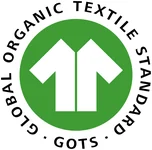
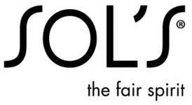
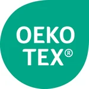

Start › Materialien
Materialien
Bio-Baumwolle und Zertifikate unserer Materialien
Wir besticken je nach Auftrag Blanks aus Bio-Baumwolle von Stanley/Stella mit Garnen von Madeira, in unserer Werkstatt in Karlsruhe.
Ab 1 Stück · 3–5 Werktage · Muster vor der Serie · Angebot meist in 1 Werktag
Angebot anfordern Unsere FertigungWelche Materialien wir verwenden
Je nach Auftrag besticken wir Blanks aus Bio-Baumwolle von Stanley/Stella mit Garnen von Madeira, in unserer Werkstatt in Karlsruhe. Auf Wunsch sticken wir auch auf Marken wie Russell, SOL'S und Result oder auf Ihre eigene Ware.
- Blanks: Bio-Baumwolle von Stanley/Stella
- Garne: Madeira
- Andere Marken auf Wunsch: Russell, SOL'S, Result, Larkwood, Babybugz, Jollein
- Fertigung in Karlsruhe, neutrale Verpackung auf Wunsch
Zertifikate und wer sie hält
Diese Zertifikate gehören den Herstellern unserer Materialien. Hier sehen Sie, wer was hält und wo die Nummern stehen:



| Material | Zertifikatsinhaber | Zertifikat | Nummer | Prüfstelle | Gültig bis |
|---|---|---|---|---|---|
| Blanks Stanley/Stella | Stanley and Stella SA | GOTS (Global Organic Textile Standard) | Lizenz CB-GOTS-CUC-03-819434 Scope Certificate CU819434GOTS-2026-00065558 | Control Union Certifications | 23.06.2027 |
| Stickgarne Madeira | Madeira Garnfabrik Rudolf Schmidt KG | OEKO-TEX® STANDARD 100 | Nr. 94.0.6007 | Hohenstein | 30.06.2027 |
| Blanks Russell | Russell (russelleurope.com) | OEKO-TEX® STANDARD 100 | 08-5941 und 11-73565 (laut Herstellerseite) | Shirley | – |
| Blanks SOL'S | SOL'S | OEKO-TEX® STANDARD 100 | laut Produktangabe, z. B. Legacy: CQ 1094/1 | IFTH | – |
Stand: 25.10.2026. Die Angaben zu Russell und SOL'S geben Herstellerangaben wieder (Herstellerseite bzw. Produktseite). Für Result, Larkwood, Babybugz und Jollein machen wir keine Zertifikatsangaben.
Was die Zertifikate abdecken
- Die Zertifikate gehören den Herstellern und gelten für deren Materialien.
- Die Zertifizierung bezieht sich auf Blanks und Garne, nicht auf die bestickten Endprodukte und nicht auf BRODIRA als Werkstatt.
- BRODIRA ist nicht selbst GOTS- oder OEKO-TEX®-zertifiziert. Die bestickten Produkte tragen deshalb kein GOTS- oder OEKO-TEX®-Label.
- Ob eine bestimmte Lieferung GOTS-Ware ist, belegt das Transaktionszertifikat des Herstellers.
- Eigene Ware und andere Marken sind nicht automatisch zertifiziert, das sagen wir Ihnen vorher.
Warum Bio-Baumwolle?
Bio-Baumwolle stammt aus zertifiziertem biologischem Anbau. Für die Stanley/Stella-Blanks belegt das die GOTS-Zertifizierung des Herstellers.
Werbetextilien aus Bio-Baumwolle
Bestickte Bio-Textilien sind ein glaubwürdiges Werbe- und Geschenkmedium für umweltbewusste Marken.
Warum Stickerei langlebig ist
Ein gesticktes Logo ist Teil des Gewebes und bleibt auch nach vielen Wäschen sichtbar. Textilien, die länger getragen werden, müssen seltener ersetzt werden. Pflegehinweise finden Sie in unseren Pflegetipps.
Wo wir ehrlich sind
Wir sticken auf Wunsch auch auf andere Marken oder auf Ihre eigene Ware. Diese sind nicht automatisch zertifiziert, das sagen wir Ihnen vorher. Auch Angaben wie CO₂-neutral machen wir nicht, weil wir sie nicht belegen können.
So läuft eine Bestellung auf Bio-Baumwolle ab
Sie nennen uns Textil, Stückzahl und Motiv, wir digitalisieren und senden ein Muster zur Freigabe, danach fertigen wir in der Regel in 3–5 Werktagen. Versand versichert nach Deutschland, Österreich und in die Schweiz, auf Wunsch in neutraler Verpackung.
Materialien – häufige Fragen
Was bedeutet GOTS?
Der Global Organic Textile Standard ist das führende Siegel für Textilien aus biologisch erzeugten Naturfasern – mit ökologischen und sozialen Kriterien über die gesamte Lieferkette.
Welche Stickgarne verwenden Sie?
Stickgarne von Madeira. Der Hersteller hat dafür ein OEKO-TEX® STANDARD 100-Zertifikat (Nr. 94.0.6007).
Sind alle Ihre Textilien Bio?
Je nach Auftrag verwenden wir Blanks aus Bio-Baumwolle von Stanley/Stella. Bei anderen Marken oder Ihrer eigenen Ware ist das nicht automatisch der Fall, das sagen wir Ihnen vorher.
Wie pflege ich bestickte Bio-Textilien?
Auf links waschen, schonend trocknen und bügeln. Alle Hinweise finden Sie in unseren Pflegetipps.
Auf Bio-Baumwolle besticken lassen
Sie möchten Textilien aus Bio-Baumwolle besticken lassen? Schildern Sie uns Ihr Vorhaben – wir machen ein Angebot.
Angebot anfordernWeiter: Pflegetipps · Logo besticken lassen · Corporate Wear · Stickerei Karlsruhe